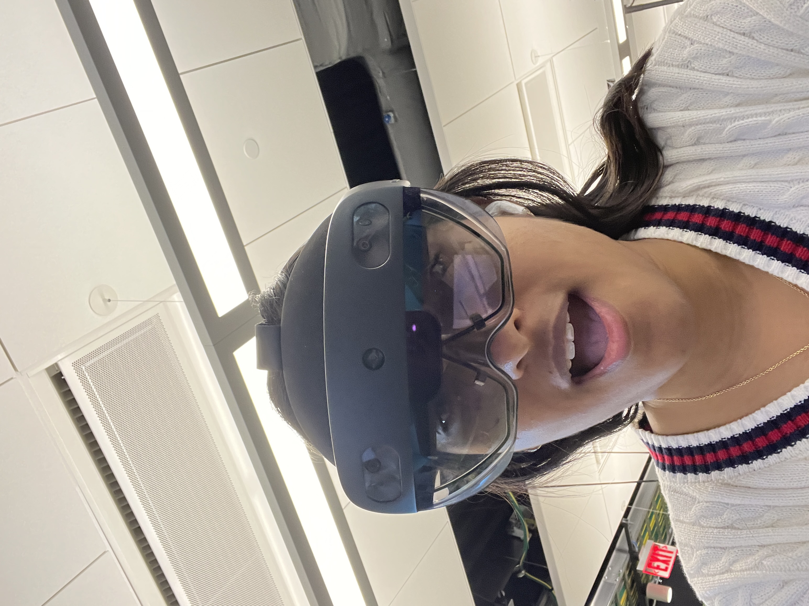
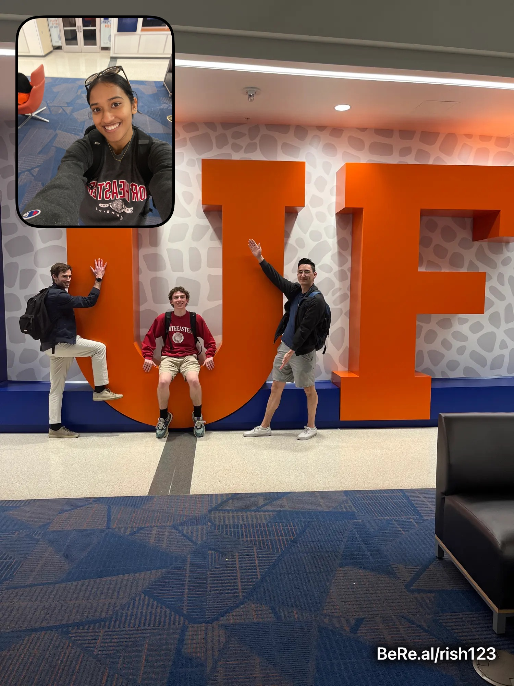

PTG: Perceptually-enabled Task Guidance



Overview
The Perceptually-enabled Task Guidance (PTG) program aims to develop AI technologies to help users perform complex physical tasks. In collaboration with a team of over 10 professionals from various institutes, I helped develop an advanced augmented reality system to DARPA project leads.
Key Contributions
- 3D Object Tracking: Designed and implemented a robust tracking system using Kalman filters for real-time world state modeling and precise object localization.
- Object Contact Graphs: Led the development of a contact graph system that monitors real-time object interactions, feeding critical spatial data into a larger knowledge graph.
- AR Integration: Integrated these perception modules into a Hololens-based AR interface to provide intuitive, real-time guidance to the user.